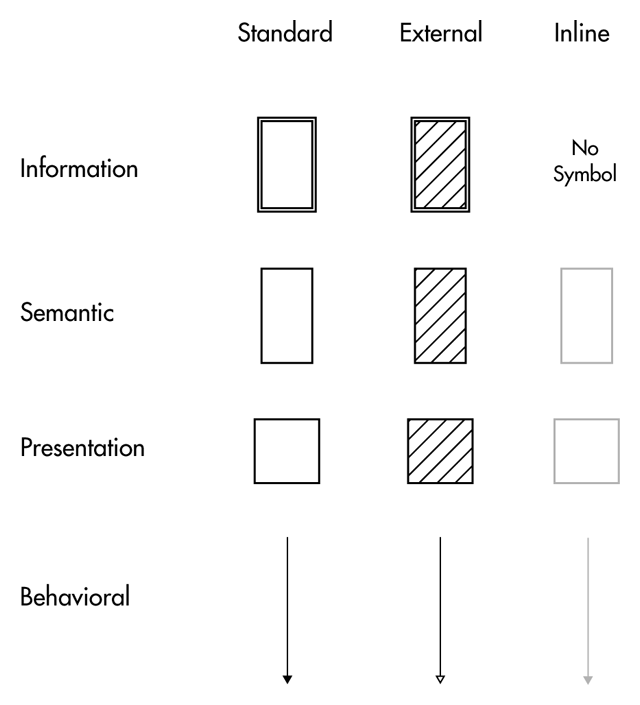
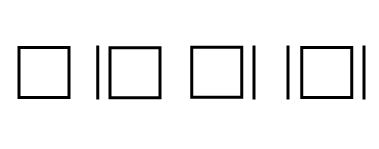
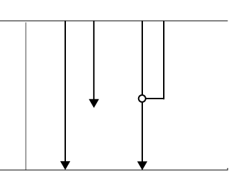
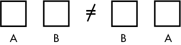
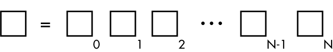
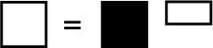

Basics
Views
In order to make a visual representation, I decided to take the same model from Introduction and flatten it. Basically, create something like shuffleboard.

Here, all four layers are represented by four sections from left to right:
- Information – content
- Semantic – HTML/microformats
- Presentation – CSS
- Behavioral – Javascript
- (see Information Layer for more descriptions)
This panel represents a view. In each application, there are a number of distinct views or in other terminology, screens or templates.
A collection of these views represent a system or the application itself. Each panel is a visual description of the interactions that take place within a view among all the layers.
Symbols
In all four layers, there are basic symbols.

These symbols (left of each duo) are called blocks and represent main/base blocks of code in each layer. Adjacent to these blocks are smaller symbols called fragments, representing smaller blocks of code.
These symbol come in three different versions, depending on where the code is located – standard, inline (on page and not linked in separate file) and external (location on another server).

Beyond here, we go to the more specialized symbols. In this case, most (if not all) of these symbols will come from two layers: Presentation and Behavioral. This is due to the various specific interactions that are represented.
Presentation
Each block/fragment of CSS has four versions, depending on media query.

The basic square (left) presents the default stylesheet/CSS code, without any media declarations (device or conditions).
The following two symbols represent code with a) specific device declaration (print, screenreader, etc.) and b) specific conditions such as orientation and min-width.
These two can be combined into the symbol to the right, representing a code with both specifications.
Behavioral
Finally, we have the behavioral layer. Just like the previous layer, order matters (just like the order of JS scripts loaded on a page).

From the symbols above:
- Arrow line/full height – base script (i.e. jQuery, other JS scripts)
- Arrow line/partial extended height – Dependent scripts/plugins for JS only
- Crossing lines connected – Dependent scripts/plugins on other scripts/frameworks
There are a few more symbols but these will be detailed more in case studies or explained in appendix.
Rules
First some ground rules (using Presentation blocks):
-

Unless it is non-interacting, source code order matters, i.e. ab != ba. Just like in CSS and JS, code that gets written below could overwrite code above it.
(Presentation/Behavioral) -

Blocks/transforms can be represented by a combination of smaller blocks (from linear algebra/transforms). Very important in terms of describing items in more detail.
(Presentation/Behavioral/Semantic) -

At the atomic (non-reducible) level, each block/transform can be represented by two parts: a transformative which alters code and an additive which only adds code.
(Presentation/Behavioral/Semantic)